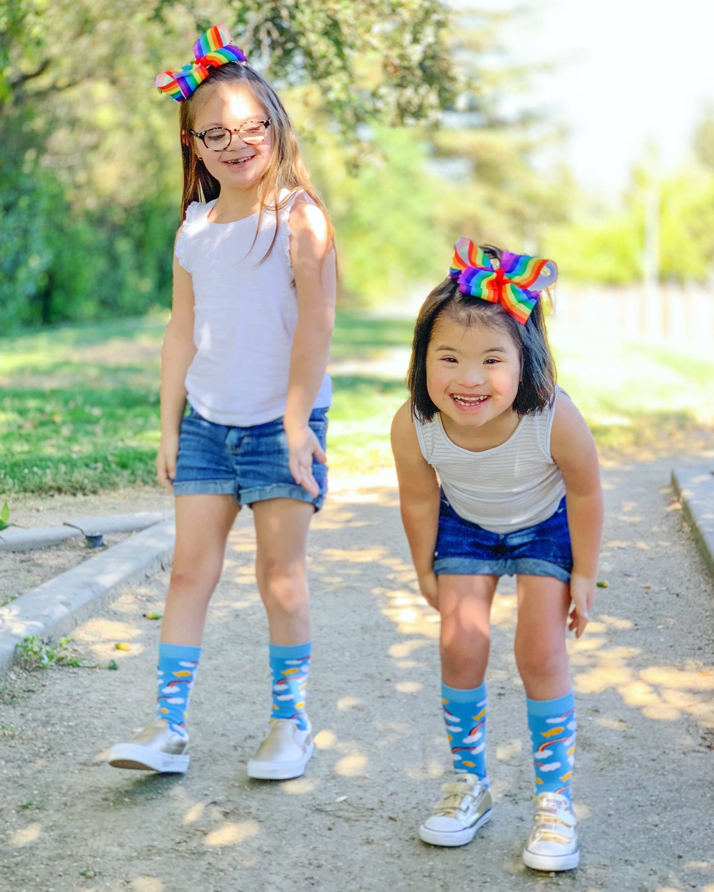

Zoey and Ruby
America Down syndromeZoey is our fourth biological child and gave us all the biggest surprise by sporting an extra chromosome (she has Down syndrome) as well as being born with a congenital heart defect. The first year was hard, with five weeks in the NICU and open heart surgery - but through it all we could see that Zoey was a shining light in this world!
Zoey amazes us and inspires us, she’s the reason we decided that if we ever adopted (a long time dream of mine) we wanted to adopt a child with Down syndrome. Ruby joined our family at the age of five, also sporting an extra chromosome and CHD!
We are so blessed to have these girls in our lives! We are all better because of them and I can’t imagine our family any other way!!
Get involved Back to all stories